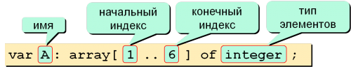
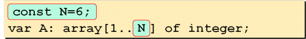
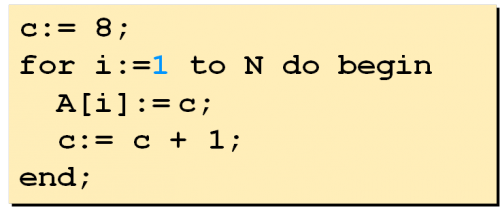
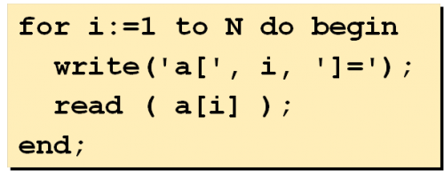

| Тема 1. Одномерные массивы в Паскале. | ||
| Назад | ||
ОБЪЯВЛЕНИЕ МАССИВА
Массивы в Паскале используются двух типов: одномерные и
двумерные.
 var dlina: array [1..3] of integer; begin dlina[1]:=500; dlina[2]:=400; dlina[3]:=150; ...
dlina — идентификатор (имя) массива;Array (в
переводе с англ. «массив» или «набор»);
[1..3] — в квадратных скобках ставится номер
(индекс) первого элемента, затем две точки и индекс последнего
элемента массива, т.е. по сути, указывается количество
элементов; количество элементов массива называется размерностью
массива
of integer (с англ. «из целых чисел») —
указывает, к какому типу относится массив, of здесь — служебное
слово.
Объявить размер можно через константу:
 ИНИЦИАЛИЗАЦИЯ МАССИВАКроме того, массив может быть сам константным, т.е. все его элементы в программе заранее определены. Описание такого массива выглядит следующим образом: Заполнение последовательными числами:

Результат:
A[1] = 8, A[2] = 9, A[3] = 10, ..., A[N] = A[N-1] + 1
Ввод с клавиатуры:
Пример: Рассмотрим, как происходит
ввод массива в Паскале:
 ✍ Пример результата: введите кол-во элементов:
3
a[1]=5
a[2]=7
a[3]=4
ВЫВОД ЭЛЕМЕНТОВ МАССИВА
Пример: Рассмотрим, как вывести массив
в Паскале:
✍ Пример результата: Массив A:
2 4 8 6 3
Для работы с массивами чаще всего используется в Паскале цикл for с параметром, так как обычно известно, сколько элементов в массиве, и можно использовать счетчик цикла в качестве индексов элементов.
Задача Array 0. Необходимо задать
вещественный массив размерностью 6 (т.е.
из шести элементов); заполнить массив вводимыми значениями и
вывести элементы на экран. Использовать два цикла: первый —
для ввода элементов, второй — для вывода.
Пример результата: введите элемент массива: 3.0 введите элемент массива: 0.8 введите элемент массива: 0.56 введите элемент массива: 4.3 введите элемент массива: 23.8 введите элемент массива: 0.7 Массив = 3, 0.8, 0.56, 4.3, 23.8, 0.7
В данном примере работы с одномерным массивом есть явное неудобство: присваивание значений элементам.
Обработка массивов в Паскале, так же как и заполнение
массива, происходит обычно с использованием цикла
for.ФУНКЦИЯ RANDOM В PASCAL
Для того чтобы постоянно не запрашивать значения элементов
массива используется генератор случайных чисел в Паскаль,
который реализуется функцией
Диапазон в Паскале тех самых случайных чисел от |
||
| Конспект подготовлен Бакулиным А. М. 2022 год. | ||